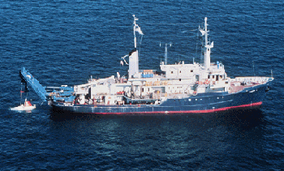

|  copyright-WHOI |
|
Atlantis II was named for the Woods Hole Oceanographic Institution's
first research vessel. Long considered the flagship of the Institution's
fleet, the ship traveled around the world and was involved with every type
of ocean science investigation.
In 1979 Atlantis II underwent a major mid-life refit. The conversion
of the vessels power source from steam to diesel reduced the vessel’s operating
cost, increased its range of travel, and increased its selection of ports.
In 1983 a deck hanger and A-frame were installed enabling her to handle
the launch and recovery of the submersible Alvin. Atlantis II
served as Alvin's tender from 1984 to 1996.
Atlantis II concluded 34 years of service, over one million miles sailed
for science, and more than 8,000 days at sea, a record unequaled by any
research vessel. In 1996 she was delivered to Shaula Navigation, based
in Boulder CO for rechristening as Antares and a planned new career
as a fisheries reserach vessel in the North Pacific and Gulf of Alaska.